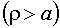

Theory of Fresnel Diffraction
(Circular Aperture)
Consider a unit amplitude, monochromatic plane wave of wavelength
 traveling in the positive z-direction. Let us suppose that this wave is normally incident upon an opaque screen that occupies the plane z = 0 and has a circular aperture of radius a which is centered about the origin. In this submodule, the irradiance, on an observation screen that occupies the plane z = constant > 0 is calculated and displayed.
traveling in the positive z-direction. Let us suppose that this wave is normally incident upon an opaque screen that occupies the plane z = 0 and has a circular aperture of radius a which is centered about the origin. In this submodule, the irradiance, on an observation screen that occupies the plane z = constant > 0 is calculated and displayed.
Let P = (x, y)be a point on the observation screen. Since the diffraction pattern will have circular symmetry, it is advantageous to change to plane polar coordinates in the observation plane,
and to omit the  coordinate when referring to the irradiance on the observation screen, i.e., to refer it as .
coordinate when referring to the irradiance on the observation screen, i.e., to refer it as .
In order to facilitate our discussions, let us note that the observation points on the screen can be divided into three different classes, depending upon where they reside relative to the predictions of geometrical optics. When a monochromatic plane wave is normally incident upon a circular aperture of radius a, geometrical optics predicts that the irradiance will be constant in the region (the "lit" region) and zero in the region (the "shadow" region). The set of points for
which is called the "shadow boundary."
In subsequent discussions the Fresnel number,
and the dimensionless parameters
will be important. We will also need the two types of Lommel functions of two variables:
where m is any nonnegative integer and is the Bessel function of the first kind of order p.
(a) Lit Region
The irradiance at the center of the pattern is particularly simple,
For all other observation points in the lit region the irradiance is given by the formula
(b) Shadow Boundary
The irradiance at points on the shadow boundary in the observation plane is given by the formula
(c) Shadow Region 
The irradiance at points in the shadow region in the observation plane is given by the formula
Created by Srihari" TARGET=EXTERNAL>Srihari Angaluri
and Kiril Vidimce
Send comments to comments@webtop.org